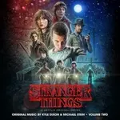
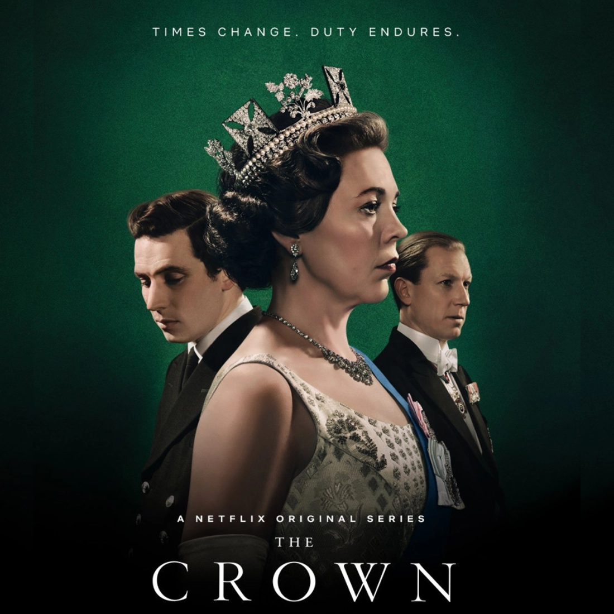
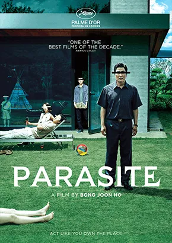
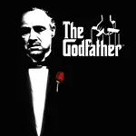

-
Breaking Bad - Um professor de química do ensino médio vira
fabricante de metanfetamina após ser diagnosticado com câncer
terminal.
-

Stranger Things - Um grupo de crianças em uma pequena cidade
descobre um mundo paralelo perigoso enquanto procuram por sua amiga
desaparecida.
-

The Crown - Uma dramatização da vida da Rainha Elizabeth II desde os
seus primeiros anos até os eventos mais recentes.
-
Black Mirror - Uma série antológica que explora um futuro distorcido
e frequentemente apocalíptico causado pela tecnologia.
-
Inception (A Origem) - Um ladrão de informações entra nos sonhos das
pessoas para roubar seus segredos mais profundos.
-

Parasite (Parasita) - Uma família pobre coreana encontra uma forma
única de infiltrar-se em uma família rica.
-
The Shawshank Redemption (Um Sonho de Liberdade) - Um homem é
condenado à prisão perpétua e encontra maneiras de tornar a vida
melhor para ele e seus companheiros de cela.
-

The Godfather (O Poderoso Chefão) - A vida e os tempos de uma
família de criminosos italianos-americanos.
-
13th - Explora a história da raça e do sistema criminal nos Estados
Unidos.
-
Planet Earth II - Uma incrível visão em 4K da vida animal e da
natureza em todo o mundo.
-
Won't You Be My Neighbor? - Um olhar afetuoso sobre a vida e
carreira de Fred Rogers, o apresentador do programa infantil "Mister
Rogers' Neighborhood".
-
Jiro Dreams of Sushi - Este documentário segue Jiro Ono, um mestre
de sushi de 85 anos de idade, enquanto ele trabalha em seu
mundialmente famoso restaurante em Tóquio.
 Breaking Bad - Um professor de química do ensino médio vira fabricante de metanfetamina após ser diagnosticado com câncer terminal.
Breaking Bad - Um professor de química do ensino médio vira fabricante de metanfetamina após ser diagnosticado com câncer terminal. Black Mirror - Uma série antológica que explora um futuro distorcido e frequentemente apocalíptico causado pela tecnologia.
Black Mirror - Uma série antológica que explora um futuro distorcido e frequentemente apocalíptico causado pela tecnologia. Inception (A Origem) - Um ladrão de informações entra nos sonhos das pessoas para roubar seus segredos mais profundos.
Inception (A Origem) - Um ladrão de informações entra nos sonhos das pessoas para roubar seus segredos mais profundos. The Shawshank Redemption (Um Sonho de Liberdade) - Um homem é condenado à prisão perpétua e encontra maneiras de tornar a vida melhor para ele e seus companheiros de cela.
The Shawshank Redemption (Um Sonho de Liberdade) - Um homem é condenado à prisão perpétua e encontra maneiras de tornar a vida melhor para ele e seus companheiros de cela. 13th - Explora a história da raça e do sistema criminal nos Estados Unidos.
13th - Explora a história da raça e do sistema criminal nos Estados Unidos. Planet Earth II - Uma incrível visão em 4K da vida animal e da natureza em todo o mundo.
Planet Earth II - Uma incrível visão em 4K da vida animal e da natureza em todo o mundo. Won't You Be My Neighbor? - Um olhar afetuoso sobre a vida e carreira de Fred Rogers, o apresentador do programa infantil "Mister Rogers' Neighborhood".
Won't You Be My Neighbor? - Um olhar afetuoso sobre a vida e carreira de Fred Rogers, o apresentador do programa infantil "Mister Rogers' Neighborhood". Jiro Dreams of Sushi - Este documentário segue Jiro Ono, um mestre de sushi de 85 anos de idade, enquanto ele trabalha em seu mundialmente famoso restaurante em Tóquio.
Jiro Dreams of Sushi - Este documentário segue Jiro Ono, um mestre de sushi de 85 anos de idade, enquanto ele trabalha em seu mundialmente famoso restaurante em Tóquio.